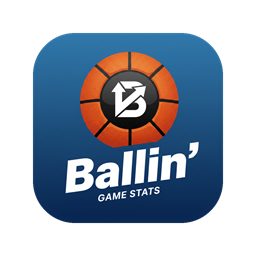

Ballin' Support
Basketball stats for parents and volunteer scorekeepers.
Contact
Questions, problems, or ideas: email ballin.support@gmail.com. Tell us which iPhone you have and what you were doing when it happened, and a screenshot helps.
Getting the app
Ballin' is in testing through Apple's TestFlight. Install the free TestFlight app from the App Store, then open the invite link you were sent on your iPhone and tap Accept, then Install. You need an iPhone 8 or newer on iOS 16.4 or later.
Common questions
How do I record a shot?
Tap the player in the list on the left, then tap the spot on the court where they shot. One tap is a miss; two quick taps is a make. Ballin' works out whether it was a 2 or a 3 from where you tapped.
A 3-pointer counted as a 2. What happened?
The court uses the 3-point line chosen for the game: High school (the default), College or Pro. Check it in the in-game menu. If a tap lands just inside the line, tap Make it a 3 in the top corner of the court to fix it. For an earlier shot, open Play by Play, tap the shot, and choose 3 points.
I gave a basket to the wrong player. Can I fix it?
Yes, even several plays later. Open the Play by Play tab, tap the play, and change the player, switch it between made and missed or between 2 and 3 points, change its quarter and time, or delete it. Every stat updates to match. For the play you just recorded, Undo at the top of the screen is quicker.
Can I track only my own child?
Yes. Add just your child to the roster and start them alone. When a teammate you aren't tracking does something, such as a basket or a rebound, tap Team in the roster and record it the same way, so the score still matches the gym's.
Why does the app turn sideways?
Setup screens (teams, rosters, starting a game) are upright, because they're mostly typing. When a game starts, Ballin' turns sideways to fit the roster, the court and the stat buttons on one screen.
Do I need internet or an account?
No. Ballin' works with no signal, and there's no account to create. Your games are stored on your phone.
How do I move my games to a new phone?
- On the old phone, open the home screen and tap the save icon (top right), then Back up now. Save the file somewhere you can reach from the new phone, such as email or iCloud Drive.
- On the new phone, install Ballin', open the same screen, tap Choose backup file, and pick the file.
Restoring only adds games; it never removes anything. Backups don't include player photos or team logos.
If I delete the app, are my games gone?
Yes, because they're stored only on your phone. Make a backup first (see above) if you want to keep them.